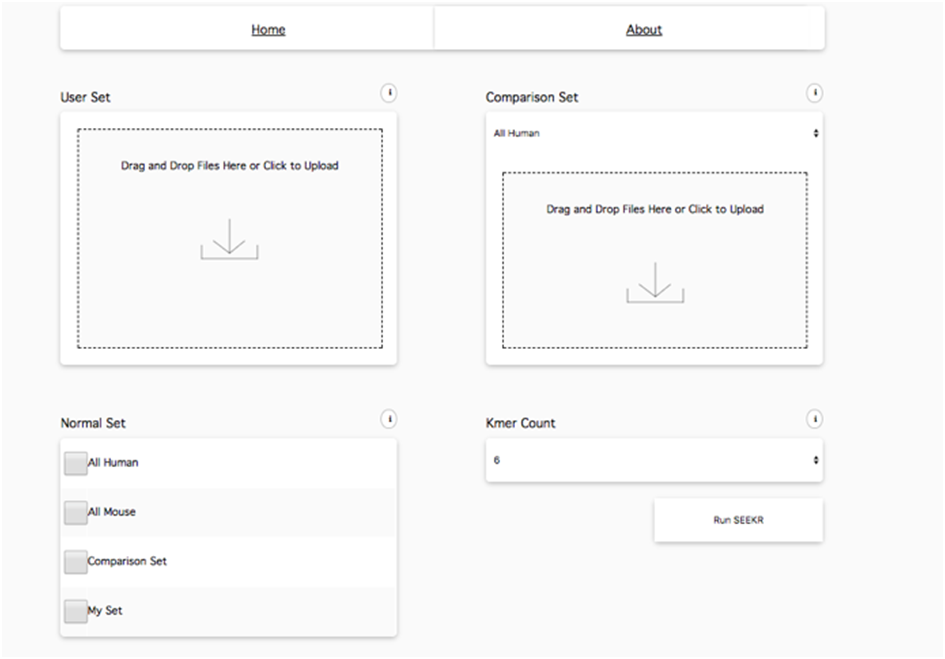

Functional Specification
Requirements:
- Straightforward user interface such as user log in*, file uploading, and setting configurations.
- Server-side support for analyzing the .FASTA format file.
- Visualizing results of two heatmaps (k-mer and Pearson) after uploading .FASTA files and make their selections in drop down menu
- The user can click on each row index or column index to sort each heatmap, and the user can reset the sorted heatmap and download the result.
- For visualization, there is a limit on the number of sequences, currently 200. The k-mer length is also limited for visualization, and the user should get a warning about the visualization if it is too large to run.
- Host sample files on the server for downloading and testing.
- Provide a secure log in to control access to the website.
- Pre-compute common uses cases (GENCODE human, mouse) to allow for faster results.
- For all sequences includes those that cannot be visualized, provide a csv download of the results.
*login is currently disabled by default
Interface:
GUI:

Input and output mechanism:
Input: upload .FASTA file, select comparsion set and normalization
Output: two visualization with sorting function.
API:
- GET/home
- After successful login, will be directed home
with 3 tabs: Run Seekr, Result and Help
- POST /jobs
- POSTs to jobs, uploads files onto the server
RETURNS json {“job-id”:”created job id”}
- POST /files/fasta
- Upload a new FASTA file to the server
RETURNS json {“file-id”:”created file id”}
- POST/files/kmers
- Downloads the result file returned from the server in CSV format
- GET /login
- Retrieves the login page for the user to authenticate
- POST/login
- POST and check user name and password
Functional Requirements:
Website Basic function: narrowing down similar RNAs and find discriminative RNAs. It is mostly intended for the RNA research group.
Website UI: It is mainly three parts:
Run SEEKR: contains the upload button, dropdown button and submit button
Results: contains the result heatmaps after uploading and submitting files
Help: contains sample test files for user to test and a simple user manual.
Users can be mainly divided into two groups:
User cases:
Users who want to compare their own sets of nucleotide sequences.
- The user uploads their user-defined set of nucleotide sequences by clicking an upload button on the SEEKR web portal. Then they upload a second user-defined set of nucleotide sequences to compare with the first.
- The user will then click the drop-down menu and choose the option to compare with their user-defined sets.
- The user will choose the normalization vector in the next drop-down menu and this normalization is applied to both user-defined sets.
- The user clicks a submit style button and the SEEKR algorithm runs and user can see the progress through the progress bar. The result is returned as a matrix of normalized k-mer counts and a matrix of Pearson’s R coefficients and these can be downloaded as files and optionally displayed.
- User can see the resulting heatmap for the k-mer count and Pearson on the results tab, user can sort each column or row of result matrix. users can click a reset button to reset the sorted heatmap.
Users who want to compare their user-defined sets with a predefined set of nucleotide sequences.
- The user uploads their user-defined set of nucleotide sequences by clicking an upload button on the SEEKR web portal.
- The user will then click the drop-down menu and choose the option to compare with a predefined-set which includes a set for all human and mouse RNA from GENCODE.
- The user will choose the normalization vector in the next drop-down menu and the normalization is applied to the user-defined sequences that is computed from the GENCODE predefined sets.
- The user clicks a submit style button and the SEEKR algorithm runs and user can see the progress through the progress bar. The result is returned as a matrix of normalized k-mer counts and a matrix of Pearson’s R coefficients and these can be downloaded as files and optionally displayed.
- The user can see the resulting heatmap for k-mer counts and Pearson on the results tab. They can sort each column or row of the results matrix. and undo the sorting with the reset button.
User type:
-RNA research group in UNC.
-RNA research group outside UNC(novice users)
For novice users:
The website is intended to help narrow down similar and discriminative RNAs. By simply uploading files and getting visualizations, the user could find the similarity between their own RNA sequences and the GENCODE human or mouse RNAs in a sortable heatmap.